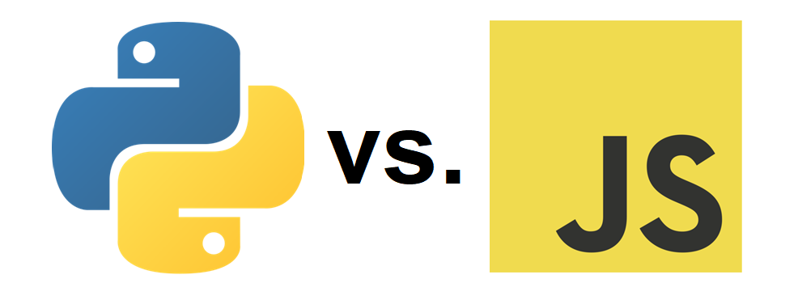

Introduction of Python and JavaScript
Last edit: April 17, 2023 By Bolin LIU
In the field of computer science, Python and
Javascript are two very well-liked languages. In thissection, we would
like
to IntroducePython and JavaScript.
This is demonstrated below:

Python
Python is a popular high-level programming language that is used for a wide range of applications, from web development to scientific computing. It was created in the late 1980s by Guido van Rossum and has since become one of the most widely used programming languages in the world.
One of the reasons for Python's popularity is its simplicity and ease of use. Python has a clean syntax that is easy to read and write, making it a great language for beginners to learn. It also has a large and active community of developers, which means there are plenty of resources available to help you learn and troubleshoot any issues you may encounter.
Python is an interpreted language, which means that it is executed line-by-line rather than compiled beforehand. This makes it a great choice for prototyping and testing code quickly. Python also supports object-oriented programming, functional programming, and procedural programming paradigms, making it a versatile language that can be used in a variety of contexts.
One of the key features of Python is its extensive standard library, which includes modules for everything from regular expressions to web development. Python also has a large ecosystem of third-party packages that can be easily installed using the pip package manager.
Overall, Python is a powerful and flexible language that is great for beginners and experienced developers alike. Whether you are just starting out with programming or looking to build complex applications, Python is a language that you should consider learning.
Javascript
JavaScript is a popular programming language that is used to create interactive and dynamic web pages. It was created in the mid-1990s by Brendan Eich and has since become one of the most widely used programming languages in the world.
One of the key features of JavaScript is its ability to manipulate web page content in real-time, which makes it a great language for creating dynamic and interactive user experiences. JavaScript is also used to build applications that run on both the client-side (in the browser) and the server-side (on the web server).
JavaScript is an interpreted language, which means that it is executed line-by-line rather than compiled beforehand. This makes it a great choice for web development, as changes can be made and tested quickly without the need to recompile the entire program.
JavaScript has a large and active community of developers, which means there are plenty of resources available to help you learn and troubleshoot any issues you may encounter. It also has a rich ecosystem of libraries and frameworks, such as React, Angular, and Vue, which can be used to simplify the development of complex web applications.
Overall, JavaScript is a versatile and powerful language that is essential for web development. Whether you are creating a simple website or a complex web application, JavaScript is a language that you should consider learning.
Python History

- 1989
- 1991
- 1994
- 2000
- 2008
- 2010
- 2015
- 2017
- 2018
- 2019
- 2020
Guido van Rossum, a Dutch programmer, begins working on a new programming language called Python.
The first version of Python (0.9.0) is released. It is a simple, interpreted language with support for modules, exceptions, and user-defined functions.
Python 1.0 is released. This version includes many new features, including lambda, map, filter, and reduce functions.
Python 2.0 is released. This version includes many new features and improvements, such as garbage collection, list comprehensions, and a new Unicode-based string type.
Python 3.0 is released. This version is a major break from previous versions of Python, with many changes that are not backward-compatible. Some of the new features in Python 3.0 include a new print function, better Unicode support, and a simpler syntax for exception handling.
Python 2.7 is released. This version is the last of the Python 2.x series, and will be supported until 2020.
Python 3.5 is released. This version includes many new features and improvements, such as async/await syntax for coroutines, type hints, and the pathlib module for working with file paths.
Python 3.6 is released. This version includes many new features and improvements, such as formatted string literals, asynchronous generators and comprehensions, and a new secrets module for generating cryptographically secure random numbers.
Python 3.7 is released. This version includes many new features and improvements, such as data classes for creating classes with automatically generated methods, improved type annotations, and better support for async/await.
Python 3.8 is released. This version includes many new features and improvements, such as assignment expressions (also known as the "walrus operator"), positional-only parameters, and improved f-strings.
Python 3.9 is released. This version includes many new features and improvements, such as support for new syntax features like match statements and decorators with parameters, as well as performance
JavaScript History

- 1995
- 1996
- 1997
- 1998-2000
- 2002-2005
- 2005
- 2006
- 2009
- 2015
- 2016-2018
- 2019
- 2020
- 2021
Brendan Eich, a programmer at Netscape, creates a new scripting language called Mocha, which is later renamed to LiveScript, and eventually to JavaScript.
The first version of JavaScript is released in Netscape Navigator 2.0. This version includes support for basic scripting, such as form validation and mouse rollovers.
ECMAScript is created as a standard for JavaScript. This version includes many new features, such as regular expressions, try/catch exception handling, and strict mode.
The browser wars between Netscape and Microsoft result in the introduction of many new JavaScript features, such as XMLHttpRequest, which enables the creation of dynamic web applications.
The rise of Ajax (Asynchronous JavaScript and XML) leads to increased use of JavaScript for creating responsive and interactive web applications.
esse James Garrett coins the term "Ajax" in an article on his website.
jQuery, a popular JavaScript library, is released. It simplifies many common JavaScript tasks and improves cross-browser compatibility.
Node.js, a server-side JavaScript runtime, is created. It allows developers to use JavaScript for creating web applications on the server, as well as the client.
ECMAScript 6 (ES6), also known as ECMAScript 2015, is released. It includes many new features, such as let and const for declaring variables, arrow functions, and classes.
ES7, ES8, and ES9 are released, with features such as async/await for asynchronous programming, rest and spread operators, and Object.values/Object.entries.
ES10, also known as ECMAScript 2019, is released. It includes features such as Array.flat(), Array.flatMap(), and optional chaining.
ES11, also known as ECMAScript 2020, is released. It includes features such as nullish coalescing and optional chaining.
ES12, also known as ECMAScript 2021, is released. It includes features such as logical assignment operators and string replaceAll().